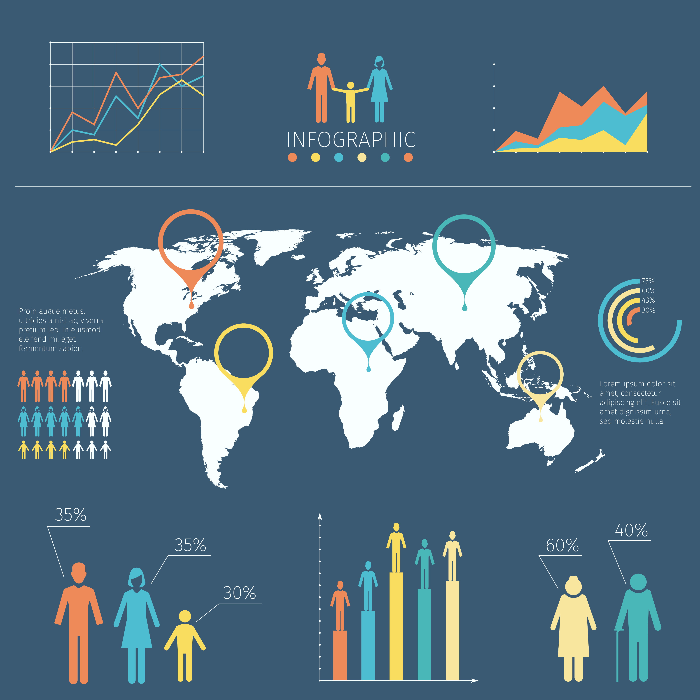
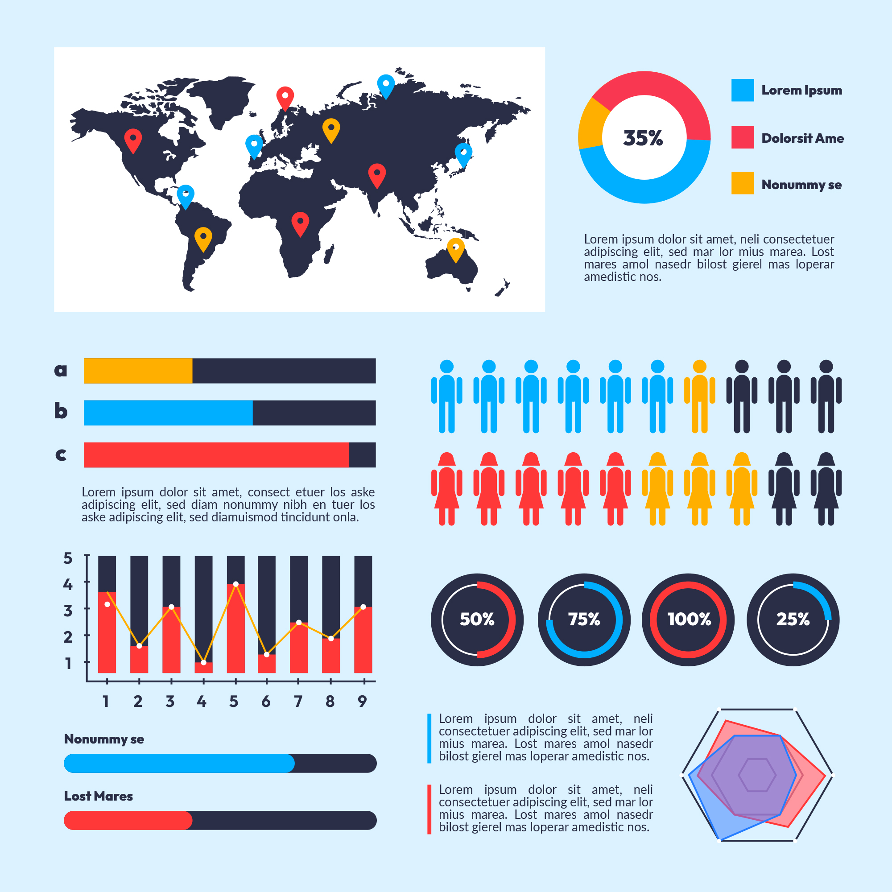
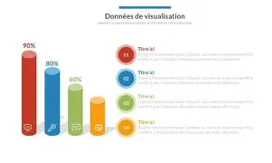

Présentation de l’étude
CLa commune de Kaya, située dans la région du Centre-Nord du Burkina Faso, connaît depuis 2016 un afflux important de personnes déplacées internes en raison de la crise sécuritaire. Cette situation exerce une pression croissante sur les ressources naturelles et les espaces agricoles. Cette étude vise à analyser la dynamique environnementale de la commune à travers une approche intégrant la télédétection, les SIG et les données socio-démographiques.

Source: Burkina Faso; L’Etat sensible à la cause des déplacés internes, mais… - SentinelleBf
Carte de situation
Voir la carteCarte de relief
Voir la carteOccupation des terres
Occupation des terres 2016 et 2024
Carte interactive de l'occupation des terres en 2016.
Voir la carte
Indices environnementaux
NDVI
NDVI 2016 et 2024NDWI
NDWI 2016 et 2024

Dynamique démographique
Variation de population
Voir la carteFacteurs anthropiques
Cette section présente les principaux facteurs anthropiques identifiés : pression démographique, afflux des PDI, extension agricole, exploitation du bois énergie.


Conclusion
L’analyse met en évidence une anthropisation progressive du territoire, marquée par l’expansion des surfaces agricoles et urbaines, la régression du couvert végétal et une pression croissante sur les ressources naturelles.